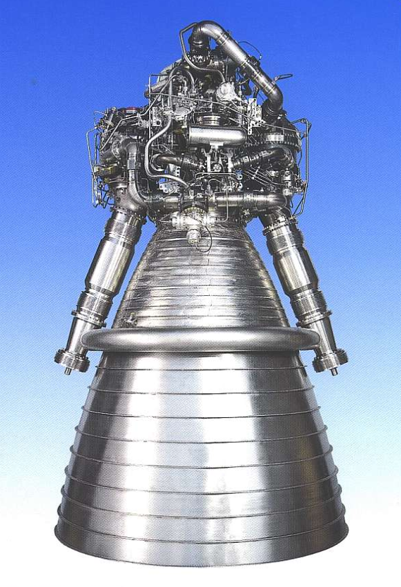

Sustitución, igualación y reducción.
Tal y como hemos visto en el apartado anterior, un sistema se puede resolver gráficamente, pero, en muchas ocasiones, este método presenta algunos inconvenientes.
Por ejemplo, en el caso de que no dispongamos de una herramienta informática preparada para representar las gráficas, estaremos obligados a construir una tabla con los puntos para, posteriormente, realizar la representación de las rectas a mano. También nos puede ocurrir que, una vez representadas las rectas, el punto de corte esté muy alejado del origen de coordenadas o que sus coordenadas no sean números enteros.
Estas situaciones suponen, normalmente, un obstáculo para encontrar la solución exacta y justifican, de manera clara, la necesidad de que existan métodos analíticos de resolución de sistemas.
Existen tres métodos clásicos.
Haz clic en las pestañas para ver la explicación y un ejemplo resuelto de cada método paso a paso:
Ejercicios
A las dos situaciones relacionadas con el fútbol que vimos en el punto anterior, le vamos a añadir una nueva pista. Plantea, en cada uno de los casos, un sistema de dos ecuaciones con dos incógnitas, resuélvelos por el método que prefieras y completa los espacios en blanco que nos dan la solución.
- La nueva pista, traducida al lenguaje matemático, quedaría: \(x = y + 10\).
A continuación, planteamos el sistema de ecuaciones y lo resolvemos. En este caso, se ha optado por resolverlo mediante el método de sustitución. Como la incógnita \(x\) ya aparece despejada en la segunda ecuación, podemos sustituirla directamente en la primera ecuación. El resto del ejercicio es una sucesión de operaciones y resolución de ecuaciones sencillas hasta obtener la solución.
\[ \left\{ \begin{array}{rrcr} x & + & y & = & 40 \\ x & = & y & + & 10 \end{array} \right. \implies \left\{ \begin{array}{rrcr} (y + 10) & + & y & = & 40 \\ x & = & y & + & 10 \end{array} \right. \implies \left\{ \begin{array}{rrcr} 2y & = & 30 \\ x & = & y & + & 10 \end{array} \right. \implies \left\{ \begin{array}{rrcr} y & = & 15 \\ x & = & y & + & 10 \end{array} \right. \implies \left\{ \begin{array}{rrcr} y & = & 15 \\ x & = & 25 \end{array} \right. \]
- La nueva pista, traducida al lenguaje matemático, quedaría: \(x + y = 172\).
A continuación, planteamos el sistema de ecuaciones y lo resolvemos. En este caso, se ha optado por resolverlo mediante el método de igualación. Para ello, como la incógnita \(x\) ya aparece despejada en la primera ecuación, basta con despejarla en la segunda e igualar ambas expresiones. El resto del ejercicio es una sucesión de operaciones y resolución de ecuaciones sencillas hasta obtener la solución.
\[ \left\{ \begin{array}{rrcr} x & = & y & + & 6 \\ x & + & y & = & 172 \end{array} \right. \implies \left\{ \begin{array}{rrcr} x & = & y & + & 6 \\ x & = & 172 & - & y \end{array} \right. \]
Igualamos ambas expresiones y despejamos las incógnitas paso a paso:
\[ \begin{aligned} y + 6 &= 172 - y \\ 2y &= 166 \implies y = 83 \\ x &= 83 + 6 \implies x = 89 \end{aligned} \] \[ \left\{ \begin{array}{rrcr} x & = & 89 \\ y & = & 83 \end{array} \right. \]
Ejercicio
A un partido benéfico celebrado en el estadio Municipal de La Línea de la Concepción, han asistido 9000 espectadores. Se han puesto a la venta únicamente dos tipos de entradas, a un precio de 15 € para los adultos y entradas infantiles a 6 €. La recaudación total ha sido de 126000 €. ¿Cuántas entradas de cada tipo se han vendido?
🔹Intenta resolver mentalmente o en un papel cada fase del problema y haz clic en las tarjetas para comprobar si vas por buen camino:
Ejercicio
Uno de los motores que propulsa el lanzamiento del cohete Ariane 5 es el Vulcain 2. Durante los 540 segundos que dura su funcionamiento consume las 155 toneladas de combustible que contiene y que están compuestas exclusivamente por oxígeno e hidrógeno líquido. Por cada tonelada de hidrógeno el Vulcain carga 5,2 toneladas de oxígeno.


Plantea y resuelve un sistema de dos ecuaciones con dos incógnitas que nos permita saber la cantidad exacta de oxígeno e hidrógeno líquido que se almacenan en el motor.
🔹 Intenta resolver mentalmente o en un papel cada fase del problema del cohete Ariane 5 y haz clic en las tarjetas para comprobar tus respuestas:
Para saber más
Para que puedas practicar los métodos de resolución anteriores te proponemos que visites el siguiente enlace del proyecto Descartes.